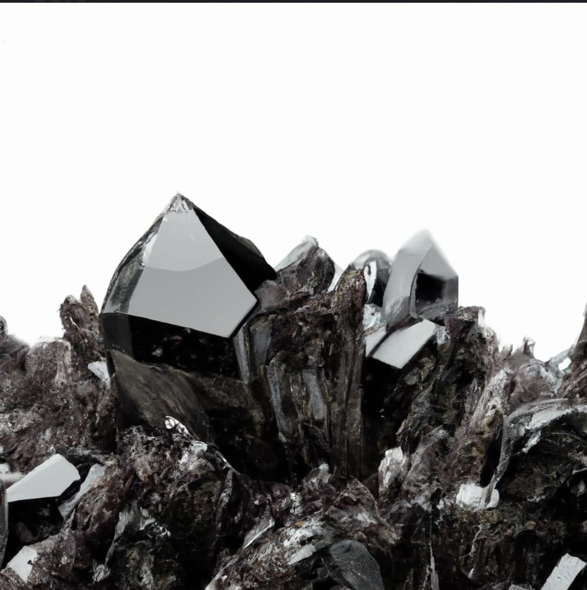

El Boro es un elemento químico metaloide de símbolo B y número atómico 5. Producido enteramente por espalación de rayos cósmicos y supernovas y no por nucleosíntesis estelar, es un elemento poco abundante tanto en el sistema solar como en la corteza terrestre. El boro se concentra en la Tierra por la solubilidad en agua de sus compuestos naturales más comunes, los minerales de borato.
